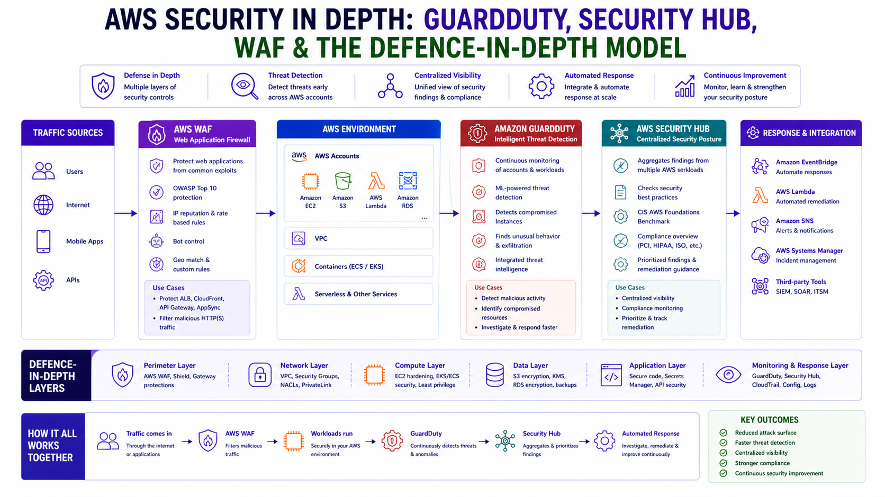

AWS Security in Depth: GuardDuty, Security Hub, WAF & the Defence-in-Depth Model
AWS Series | Part 9 — Building secure, cost-optimised, cloud-native infrastructure on AWS

TL;DR Comparison
| Service | What It Does | Layer | Cost Model |
|---|---|---|---|
| AWS WAF | Blocks L7 HTTP attacks (SQLi, XSS, bots) | Edge / ALB / CloudFront | $5/WebACL + $1/rule + $0.60/million requests |
| AWS Shield Standard | DDoS protection for L3/L4 | Edge | Free |
| AWS Shield Advanced | Enhanced DDoS + 24/7 DRT support | Edge | $3,000/month |
| Amazon GuardDuty | Threat detection from logs (ML-based) | Account-wide | Per GB of logs analysed |
| AWS Security Hub | Centralised findings aggregator + compliance | Account/Org-wide | Per finding ingested |
| AWS Config | Resource configuration compliance | Account-wide | Per rule evaluation |
| Amazon Inspector | Vulnerability scanning (EC2, ECR, Lambda) | Workload | Per instance/image scanned |
| AWS Macie | Sensitive data discovery in S3 | S3 | Per GB scanned |
Introduction
In Blog 7 we covered network-level defence — Security Groups, NACLs, and
Network Firewall. In Blog 8 we covered identity defence — IAM, SCPs,
and OIDC. This post covers the third pillar: detection, response, and application-layer
protection.
The reality of cloud security is that prevention is never 100% effective. Misconfigured resources get deployed. Credentials get compromised. Zero-day vulnerabilities appear. The question is not whether something will go wrong — it's how quickly you detect it, how clearly you understand the blast radius, and how fast you can respond.
GuardDuty, Security Hub, WAF, and the surrounding AWS
security services answer those questions. Together they form a continuous security posture that detects
threats in real time, aggregates findings across your entire organisation, blocks malicious traffic before it
reaches your application, and proves compliance to auditors without manual effort.
Every service in this post has working Terraform. The architecture patterns are production-grade
and directly applicable to regulated environments like financial services.
1. The Defence-in-Depth Model — All Layers Together
Before diving into individual services, here is the complete layered security architecture that this post builds toward:
Internet
↓
[Layer 0] AWS Shield Advanced ← DDoS protection (L3/L4)
↓
[Layer 1] AWS WAF ← L7 attack filtering (SQLi, XSS, bots)
↓
[Layer 2] CloudFront / ALB ← TLS termination, geo-restriction
↓
[Layer 3] Network ACL ← Subnet-level IP blocking
↓
[Layer 4] AWS Network Firewall ← Deep packet inspection, IPS, domain filtering
↓
[Layer 5] Security Groups ← Instance-level, least privilege
↓
[Layer 6] Application (ECS/Lambda) ← Runtime protection
↓
[Layer 7] Data (S3/RDS/DynamoDB) ← Encryption, Macie, access logging
Detection & Response (spans all layers):
├── GuardDuty → Threat detection from CloudTrail, VPC Flow Logs, DNS logs
├── Security Hub → Aggregates findings from all services + compliance standards
├── Inspector → Vulnerability scanning of EC2, ECR images, Lambda
├── Macie → Sensitive data discovery in S3
├── Config → Configuration compliance and drift detection
└── CloudTrail → Immutable API audit log for every action in every accountEach layer is independent. A threat that bypasses WAF still hits Network Firewall.
A threat that bypasses Network Firewall still hits Security Groups. Detection
services observe all layers simultaneously — they don't sit in the traffic path, so they can't be bypassed by
routing.
2. AWS WAF — Application Layer Protection
What It Does
AWS WAF (Web Application Firewall) inspects HTTP/HTTPS requests at Layer 7
before they reach your application. It can allow, block, count, or rate-limit requests based on:
- IP addresses and CIDR ranges
- Geographic origin (country-level blocking)
- HTTP headers, URI strings, query parameters, body content
- SQL injection patterns
- Cross-site scripting (XSS) signatures
- Bot signatures and browser fingerprints
- Request rate (rate-based rules)
WAF integrates with CloudFront, ALB, API Gateway, and
AppSync. For most architectures, attach it to CloudFront for the lowest latency
inspection — requests are inspected at the edge before they traverse the AWS backbone.
Full WAF Terraform — Production Configuration
# WAF Web ACL — production configuration
resource "aws_wafv2_web_acl" "main" {
name = "prod-web-acl"
description = "Production WAF — blocks L7 attacks, bots, and rate abuse"
scope = "CLOUDFRONT" # or "REGIONAL" for ALB/API GW
default_action {
allow {} # Default: allow — rules below define what to block
}
# Rule 1 — AWS Managed Core Rule Set (CRS)
# Blocks OWASP Top 10 including SQLi, XSS, RCE, LFI
rule {
name = "AWSManagedRulesCommonRuleSet"
priority = 1
override_action {
none {} # Enforce — don't override to count
}
statement {
managed_rule_group_statement {
name = "AWSManagedRulesCommonRuleSet"
vendor_name = "AWS"
# Override specific rules to count-only during initial rollout
rule_action_override {
name = "SizeRestrictions_BODY"
action_to_use { count {} } # Count first, block after validating
}
}
}
visibility_config {
cloudwatch_metrics_enabled = true
metric_name = "CommonRuleSet"
sampled_requests_enabled = true
}
}
# Rule 2 — AWS Managed Known Bad Inputs
rule {
name = "AWSManagedRulesKnownBadInputsRuleSet"
priority = 2
override_action { none {} }
statement {
managed_rule_group_statement {
name = "AWSManagedRulesKnownBadInputsRuleSet"
vendor_name = "AWS"
}
}
visibility_config {
cloudwatch_metrics_enabled = true
metric_name = "KnownBadInputs"
sampled_requests_enabled = true
}
}
# Rule 3 — Bot Control
rule {
name = "AWSManagedRulesBotControlRuleSet"
priority = 3
override_action { none {} }
statement {
managed_rule_group_statement {
name = "AWSManagedRulesBotControlRuleSet"
vendor_name = "AWS"
managed_rule_group_configs {
aws_managed_rules_bot_control_rule_set {
inspection_level = "TARGETED" # Deep bot inspection
}
}
}
}
visibility_config {
cloudwatch_metrics_enabled = true
metric_name = "BotControl"
sampled_requests_enabled = true
}
}
# Rule 4 — Rate Limiting
rule {
name = "RateLimitPerIP"
priority = 5
action {
block {
custom_response {
response_code = 429
}
}
}
statement {
rate_based_statement {
limit = 1000
aggregate_key_type = "IP"
}
}
visibility_config {
cloudwatch_metrics_enabled = true
metric_name = "RateLimit"
sampled_requests_enabled = true
}
}
visibility_config {
cloudwatch_metrics_enabled = true
metric_name = "ProdWebACL"
sampled_requests_enabled = true
}
}WAF Rollout Strategy — Count Before Block
Never deploy a new WAF rule directly to block mode in production. Use this staged
rollout:
- Week 1: Deploy all rules in
COUNTmode → observe CloudWatch metrics - Week 2: Review sampled requests → identify false positives
- Week 3: Move high-confidence rules to
BLOCK→ keep edge cases inCOUNT - Week 4: Tune remaining
COUNTrules → move toBLOCKor exclude
3. AWS Shield — DDoS Protection
Shield Standard vs Advanced
Shield Standard is automatically enabled for every AWS account at no cost. It
protects against common Layer 3 and Layer 4 DDoS attacks — SYN floods, UDP reflection attacks, and similar
volumetric threats.
Shield Advanced adds Layer 7 DDoS protection with automatic WAF rule creation
during attacks, 24/7 access to the AWS DDoS Response Team (DRT), and cost protection against
abnormal data transfer charges during a DDoS event.
# Shield Advanced — enable and protect resources
resource "aws_shield_protection" "cloudfront" {
name = "cloudfront-ddos-protection"
resource_arn = aws_cloudfront_distribution.main.arn
}Cost reality: Shield Advanced costs $3,000/month as a flat fee. For smaller organisations, Shield Standard + WAF covers the vast majority of threats.
4. Amazon GuardDuty — Intelligent Threat Detection
How It Works
GuardDuty is a continuous threat detection service that analyses three data
sources without any agents required: CloudTrail logs, VPC Flow Logs, and
DNS logs.
It uses machine learning and AWS threat intelligence feeds to generate findings
— prioritised alerts that describe a specific threat with context about the affected resource.
# Enable GuardDuty in the delegated administrator account
resource "aws_guardduty_detector" "main" {
enable = true
datasources {
s3_logs { enable = true }
kubernetes { audit_logs { enable = true } }
}
}Automated Response — Isolate a Compromised Instance
Always preserve the instance for forensic investigation — do NOT terminate it. Use EventBridge
and Lambda to isolate it automatically.
import boto3
def handler(event, context):
finding = event['detail']
instance_id = finding['resource']['instanceDetails']['instanceId']
ec2 = boto3.client('ec2')
# Automated response: isolate instance by replacing its SG
ec2.modify_instance_attribute(
InstanceId=instance_id,
Groups=['sg-quarantine-xxxxxxxx'] # Empty quarantine SG
)
print(f"Quarantined instance {instance_id}")5. AWS Security Hub — Centralised Security Posture
Security Hub is the single pane of glass that aggregates findings from
GuardDuty, Inspector, Macie, Config, and
IAM Access Analyzer. It also runs automated compliance checks against standards like
CIS AWS Foundations and PCI-DSS.
# Enable Security Hub and compliance standards
resource "aws_securityhub_account" "main" {}
resource "aws_securityhub_standards_subscription" "fsbp" {
standards_arn = "arn:aws:securityhub:eu-west-1::standards/aws-foundational-security-best-practices/v/1.0.0"
}6. Amazon Inspector — Vulnerability Scanning
Inspector automatically scans your workloads for known CVEs. Use it as a
CI/CD Gate: fail your pipeline if Inspector finds CRITICAL
vulnerabilities in your container images before they reach production.
# Fail deployment if findings exist
if findings:
raise Exception(f"Deployment blocked: {len(findings)} CRITICAL vulnerabilities found.")7. Amazon Macie — Sensitive Data Discovery
Macie uses machine learning to discover and classify sensitive data in your
S3 buckets (PII, financial data, etc.). It answers the auditor's question: "Do you know where
all your sensitive data is?"
8. AWS Config — Configuration Compliance at Scale
Config records the state of every resource and detects configuration drift.
Unlike GuardDuty (threats), Config detects misconfigurations — the
root cause of most security incidents.
# Auto-remediate S3 public access violations
resource "aws_config_remediation_configuration" "s3_public_block" {
config_rule_name = aws_config_config_rule.s3_public_access.name
target_id = "AWS-DisableS3BucketPublicReadWrite"
automatic = true
}9. CloudTrail — The Immutable Audit Log
CloudTrail is the foundation of everything. Without it, you have no visibility into who did
what. Always use is_multi_region_trail = true and is_organization_trail = true.
10. Architecture Decision Matrix
| Threat / Requirement | WAF | Shield | GuardDuty | Security Hub | Inspector | Macie | Config |
|---|---|---|---|---|---|---|---|
| SQL injection / XSS | ✅ Primary | ❌ | ❌ | ❌ | ❌ | ❌ | ❌ |
| DDoS volumetric | ❌ | ✅ Primary | ❌ | ❌ | ❌ | ❌ | ❌ |
| Compromised credentials | ❌ | ❌ | ✅ Primary | ✅ Aggregates | ❌ | ❌ | ❌ |
| CVE vulnerabilities | ❌ | ❌ | ❌ | ✅ Aggregates | ✅ Primary | ❌ | ❌ |
| Misconfigured resources | ❌ | ❌ | ❌ | ✅ Aggregates | ❌ | ❌ | ✅ Primary |
11. Common Mistakes & Anti-Patterns
Mistake 1: GuardDuty Without Automation
Findings without automation are just logs nobody reads. Always wire findings to EventBridge
response workflows.
Mistake 2: WAF in Count Mode Permanently
Count mode is only for rollout. Leaving it on permanently is a false sense of security — it's not blocking anything.
Mistake 3: Single-Region CloudTrail
A single-region trail misses API activity in other regions. Always use multi-region, organisation-wide trails.
Mistake 4: Not Testing Response Pipelines
An incident is not the time to discover your alerting broke. Use create-sample-findings
quarterly to test your automation.
The Golden Rule
"Prevention is your first priority — stop threats before they reach your app. But detection is your safety net. Security Hub is the thread that ties every finding together. Treat security tooling costs as insurance — the premium is always less than the claim."